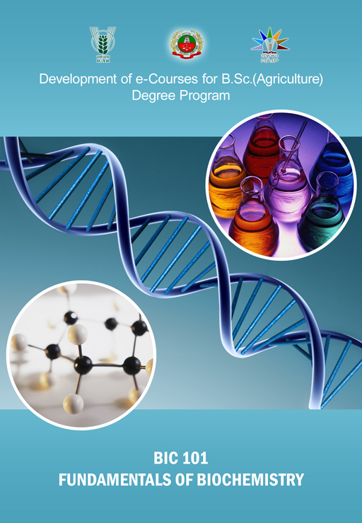

Fundamentals of Biochemsitry
:: (BIC 101) :: Credits 3 (2+1)

Select the lecture topic...
Lec 01 -
Introduction, Carbohydrates...
Lec 02 -
Occurrence & Structure...
Lec 03 -
Structure of Disaccharides ...
Lec 04 -
Muta rotation, optical activity
Lec 05 -
Chemical Properties ....
Lec 06 -
Lipids - Introduction
Lec 07-09 -
Plant fatty acids
Lec 10 -
Physical constants
Lec 11 -
Amino Acids and Proteins
Lec 12 -
Proteins
Lec 13 & 14-
Conformation of Proteins
Lec 15 -
Enzymes
Lec 16 -
Mechanism of Enzyme Action
see more...
Lec 17 -
Metabolism of Carbohydrate
Lec 18 -
Apoenzymes, Coenzymes..
Lec 19 - 24
Metabolism of Carbohydrate
Lec 25 -
Lipases and Phospholipases
Lec 26 -
Oxidation of fatty acids
Lec 27 -
Fatty acid & triacyl glycerol ..
Lec 28 -
Transamination, deamination..
Lec 29 -
Ammonia assimilating ...
Lec 30 -
Secondary metabolites ...